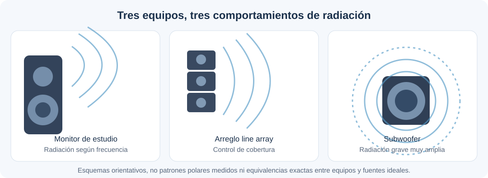
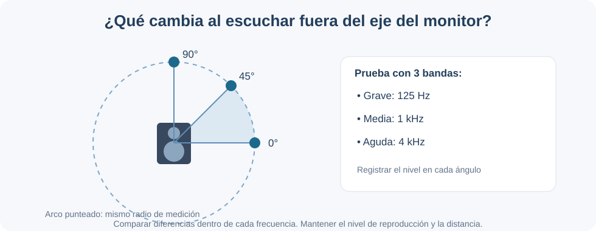

Sesión 8: Tipos de fuentes sonoras y directividad¶
Pregunta central: ¿cómo influye la forma en que un equipo distribuye el sonido en nuestra escucha, grabación y sonorización?
Al terminar la sesión podrás reconocer modelos de fuentes, interpretar la directividad y tomar decisiones básicas sobre la orientación de los monitores de estudio.
1. Tipos de fuentes: tres modelos sencillos¶
Una fuente sonora real puede comportarse de manera diferente según su tamaño, la frecuencia y la distancia. En acústica usamos tres modelos ideales para comprender cómo se propaga la energía.
| Modelo | ¿Cómo se expande el sonido? | Caída ideal al duplicar la distancia | Ejemplo orientativo |
|---|---|---|---|
| Puntual | Frente esférico | −6 dB | Un altavoz pequeño observado a suficiente distancia y en campo libre |
| Lineal | Frente aproximadamente cilíndrico | −3 dB | Una línea ideal muy larga de fuentes; referencia conceptual para ciertos arreglos |
| Plana | Frentes de onda paralelos | 0 dB por divergencia geométrica | Una onda plana ideal, por ejemplo dentro de un tubo adecuado |
Importante
Son idealizaciones, no etiquetas rígidas para los equipos. Un line array real no mantiene siempre una caída de −3 dB; depende de su tamaño, frecuencia, disposición y distancia. En una sala también intervienen las reflexiones.

🎛️ Explorar la simulación: tres tipos de fuentes
Observa: ¿qué cambia al duplicar la distancia en cada modelo? Estudiaremos con más detalle la propagación y sus fórmulas en la sesión 9.
2. Directividad: ¿hacia dónde se dirige el sonido?¶
La directividad describe cómo varía la radiación de una fuente según la dirección. Un patrón polar muestra estas diferencias alrededor del equipo.
- Omnidireccional (aproximado): emisión relativamente uniforme en todas las direcciones.
- Direccional: mayor emisión en unas direcciones que en otras.
- Fuera de eje: posición situada a un lado del eje frontal del altavoz, donde la respuesta puede cambiar.
¿Por qué depende de la frecuencia?¶
La longitud de onda disminuye cuando aumenta la frecuencia:
| Frecuencia | Longitud de onda aproximada | Qué recordar |
|---|---|---|
| 125 Hz | 2,74 m | Los graves suelen tener radiación amplia en cajas pequeñas |
| 1 kHz | 34,3 cm | La directividad depende del transductor y la caja |
| 4 kHz | 8,6 cm | Es más probable observar diferencias entre el eje y los costados |
Aplicación: orientar los monitores hacia la posición de mezcla ayuda a escuchar una respuesta más consistente, especialmente en frecuencias medias y altas. La respuesta fuera del eje varía entre modelos.
🔊 Abrir simulación sonora: frecuencia y ángulo de escucha
En la simulación, mantén una frecuencia y mueve el control del ángulo de 0° a 90°. Compara la atenuación ilustrativa y repite con otra frecuencia. No es una medición real del monitor: permite comprender la relación entre frecuencia, orientación y nivel.
3. ¿Cómo aplicamos esto a los equipos?¶
| Equipo | Aplicación en producción musical |
|---|---|
| Monitor de estudio | Orientar ambos altavoces hacia la posición de mezcla, a una altura apropiada y de forma simétrica |
| Subwoofer | Comprender su radiación grave generalmente amplia, pero comprobar su ubicación: los modos de sala pueden alterar mucho los graves |
| Sistema PA / line array | Elegir orientación y cobertura pensando en toda la audiencia, no solamente en el nivel de un punto |
| Micrófono cardioide | Recibe de forma distinta según la dirección: orientar su zona de menor sensibilidad para reducir sonidos no deseados |
Dos ideas que no deben confundirse
Un altavoz tiene un patrón de radiación; un micrófono tiene un patrón de captación. Ambos pueden ser direccionales, pero no cumplen la misma función.
¿Y los monitores «de campo cercano»?¶
Son monitores pensados para trabajar a distancias cortas, donde buscamos que predomine el sonido directo sobre las reflexiones. Esto no significa que todas sus frecuencias estén físicamente dentro del campo cercano de cada transductor. El campo próximo depende de la geometría, la frecuencia y el tipo de fuente.
4. Demostración: medir la directividad de un monitor¶
Objetivo: comprobar cómo cambia el nivel sonoro al escuchar un monitor en diferentes ángulos, sin cambiar la distancia.

Materiales: un monitor de estudio, computadora con generador de señales, micrófono de medición y analizador de espectro (ideal); como aproximación, sonómetro o aplicación móvil. Reproducir a volumen moderado.
Procedimiento:
- Coloca el micrófono aproximadamente a 1 m del monitor, a la altura del transductor de referencia. Mantén fija esa distancia respecto del punto de referencia de la caja.
- Reproduce una banda de ruido estrecha centrada en 125 Hz, 1 kHz y 4 kHz, una por vez; utiliza el mismo nivel de reproducción durante cada serie.
- Para cada banda, mide a 0°, 45° y 90°, desplazando el micrófono sobre un arco alrededor del monitor. Mantén el espacio lo más silencioso posible.
- Registra los niveles y calcula la diferencia respecto a la lectura en 0°. Si solo dispones de un sonómetro, una alternativa es utilizar tonos individuales de bajo nivel, sabiendo que las reflexiones pueden alterar mucho la lectura.
| Frecuencia | 0° (dB) | 45° (dB) | 90° (dB) | Diferencia 90° − 0° |
|---|---|---|---|---|
| 125 Hz | ||||
| 1 kHz | ||||
| 4 kHz |
Preguntas para discutir: ¿en cuál de las frecuencias cambia más el nivel? ¿Qué consecuencias tiene para la orientación de los monitores y para la posición del oyente?
Alcance de la medición
Dentro del aula, las reflexiones, las dimensiones del monitor y el ruido de fondo pueden modificar los resultados; no esperes un patrón polar de laboratorio. Para obtener comparaciones rigurosas se necesitan equipos adecuados y condiciones controladas. Una aplicación de teléfono sirve como demostración aproximada, no como medición calibrada.
5. Resultados reales: mediciones de los tres grupos¶
En la práctica de clase, tres grupos midieron un mismo monitor a 0°, 45° y 90°, con tres lecturas AVG/Leq por posición y bandas de ruido rosa filtrado. Los grupos utilizaron celulares diferentes, por lo que comparamos cambios respecto a 0°, no niveles absolutos entre dispositivos.
Cómo leer los resultados: para una frecuencia dada, resta el promedio a 0° del promedio a 45° o 90°. Si el resultado es negativo, el nivel disminuyó fuera del eje; si es positivo, aumentó. Esta resta compara niveles: no es la resta logarítmica utilizada para separar una fuente del ruido de fondo.
📈 Abrir el gráfico interactivo en pantalla completa
¿Qué observamos?¶
- 125 Hz, Grupo 1: casi no hubo variación a 90° (+0,07 dB).
- 500 Hz, Grupo 1: el nivel aumentó a 90° (+1,27 dB). Las reflexiones, la geometría de medición y el espacio podrían influir.
- 4.000 Hz, Grupo 2: el nivel cayó −4,13 dB a 90°.
- 6.000 Hz, Grupo 3: apareció la mayor caída, −7,40 dB a 90°.
- 1.000 Hz fue medido por los tres grupos, con diferencias distintas. Esto abre la discusión sobre repetibilidad, teléfonos y posición del micrófono.
Interpretación de las mediciones
En conjunto se observa una tendencia compatible con mayor directividad a frecuencias agudas, pero no una caída uniforme en todas las bandas. Estos son resultados de una práctica en aula, afectados por reflexiones y por distintos micrófonos; no equivalen al patrón polar calibrado del monitor. Las líneas que unen los puntos en el gráfico facilitan su lectura y no representan frecuencias adicionales medidas.
Idea final: la cantidad de dB en un punto no explica toda la experiencia auditiva. También importa en qué dirección se distribuye el sonido y cómo cambia con la frecuencia.
Referencia de consulta: Everest, F. A. y Pohlmann, K. C. (2009). Master Handbook of Acoustics, 5.ª ed., cap. 3. Para interpretar un equipo concreto, consulta sus mediciones polares y su documentación técnica.